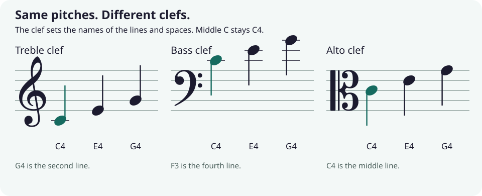

Treble clef
Lines (bottom to top): E G B D F, as in “Every Good Boy Does Fine.” Spaces spell F A C E.
Sheet music trainer · PreK to college · Practice a little every day
Start with a note. Find its name, hear its pitch, then place it on the staff yourself. Choose your level to move from colored desk bells to scales, chords, and college theory.
01 · Trainer
Choose a familiar level. Try an identification drill first, then its construction partner to practice writing what you can read. Change levels any time; your scores stay on this device.
Now showing:
Read pitch from the note’s line or space. These drills test pitch: sequences use quarter notes, and stacks use whole notes.
02 · Desk bells
Desk bells and handbells are color-coded so a whole class can play a song together: each child holds one or two bells and rings when their color appears. Tap a bell to hear it, then find the same color on the staff.
Here Do is always C (fixed-do). The staff shows eight bells climbing from middle C to the C above: a step is the next line or space, a skip jumps over one.
03 · Levels
| Level | Notes & clefs | Key signatures | Intervals | Scales | Chords |
|---|---|---|---|---|---|
| PreK Desk bells | Do Re Mi Fa Sol, colored bells, treble clef | Locked until 3rd grade | Higher, lower, or the same | Bell stairs: up or down | How many bells ring together; stack Do–Mi–Sol |
| K–2 Colored notes | Letter names A–G with colors and solfege, treble clef | Locked until 3rd grade | 2nd to 5th: steps and skips | C major and A minor | C, F and G chords |
| 3–5 | Treble and bass, ledger lines, sharps and flats | Count the sharps and flats (up to 4) | 2nd to octave, by number | Major and natural minor, up to 2 accidentals | Major and minor triads |
| 6–8 | Wider range, bell colors optional | Name the major key (up to 4) | Major, minor and perfect | Plus harmonic and melodic minor, pentatonics | Major, minor, diminished, augmented |
| 9–12 | Up to 3 ledger lines | All 15 keys, major and minor | Plus augmented and diminished | Plus the seven modes, blues, whole tone | Seventh chords and inversions |
| College | Alto clef, 4 ledger lines, double sharps and flats | All 15 keys in three clefs | Compound: 9th to 13th | Plus double harmonic and chromatic | Sus chords, minor-major 7th, all inversions |
04 · Cheat sheet

Lines (bottom to top): E G B D F, as in “Every Good Boy Does Fine.” Spaces spell F A C E.
Lines: G B D F A, “Good Boys Do Fine Always.” Spaces: A C E G, “All Cows Eat Grass.”
The middle line is middle C. Violas commonly read alto clef; trombones usually read bass clef and sometimes tenor clef.
Sharps arrive F C G D A E B. Flats arrive B E A D G C F. Last sharp, up a half step = the key. Second-to-last flat = the key.
Count letters for the number, count half steps for the quality. Perfect: 0, 5, 7, 12. Major 2nd 2, 3rd 4, 6th 9, 7th 11. Minor is one less.
Major: W W H W W W H. Natural minor: W H W W H W W. In these seven-note scales, each letter name appears once before the closing octave.
Major 4+3, minor 3+4, diminished 3+3, augmented 4+4 (half steps, stacked). A seventh chord adds one more third.
C♯ and D♭ sound the same but are different notes. A 3rd above C always uses the letter E (E, E♭ or E♯), never F♭.
05 · For teachers